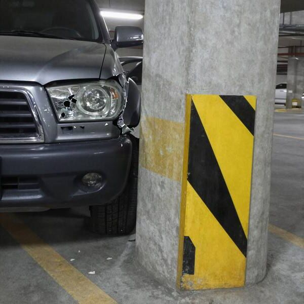

Brigada de Homicidios · Inspección vehicularCamioneta gris LKTR·41 · B. Ferrada
E17 · BInspección de la camioneta

- Adelante: el foco izquierdo está roto y no enciende. De frente, de noche, se ve una sola luz blanca a unos 80 cm del suelo.
- Atrás: dos luces rojas que funcionan, separadas por 1,5 m.
- Hay barro fresco en las ruedas y en los pisos. En el pick-up hay piedrecillas de ripio.
- En la guantera, un presupuesto del Taller Los Aromos, del 27-10-2026: "Óptico delantero izquierdo, roto el 26-10. $185.000. El repuesto llega el 03-11". Sigue sin reparar.
 Open CaseEl Chupacabras de Labranza
Open CaseEl Chupacabras de Labranza